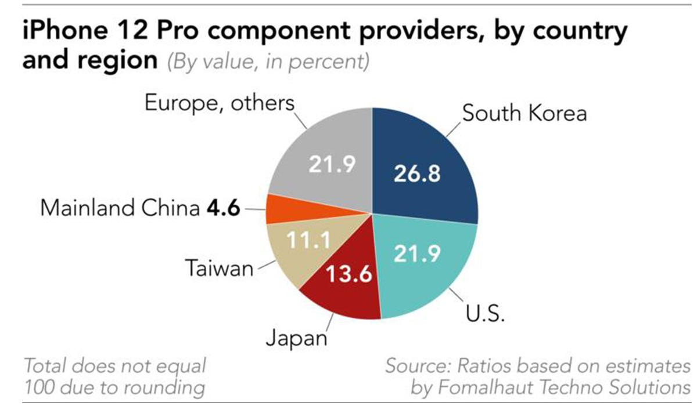

Executant


Client
(grafic) Cât costă producția unui iPhone 12 Pro în
comparație cu prețul său de peste 30 000 de lei
Un iPhone 12 Pro (capacitatea de memorie de 512 GB) se vinde la un preț de peste 30 000 de lei. Experții de la Fomalhaut Techno Solutions au desfăcut un iPhone 12 Pro de 512 GB ca să vadă ce piese are și cât valorează acestea.
Astfel, ei și-au dat seama că toate piesele necesare pentru a fabrica un telefon de acest fel costă numai 8 300 de lei.
Desigur, în această sumă intră doar costul componentelor, nu și salariile muncitorilor, serviciile oferite de Apple și nici taxele de transport sau costurile de marketing, transmite go4it.ro.
Ecranul de pe iPhone 12 Pro nu este cea mai scumpă componentă. Samsung este compania responsabilă pentru aceste ecrane, prețul lor fiind estimat la 1 400 de lei.
Modemul 5G este în schimb estimat la un cost de 1 840 de lei. Acesta este un model Qualcomm X55 5G, pe care îl regăsim și pe alte smartphonuri, dar echipate cu chipset-uri Snapdragon.
Procesorul Apple A14, primul pe cinci nanometri de pe piață și unul dintre cele mai puternice la ora actuală, costă doar 800 de lei, acesta fiind unul dintre avantajele Apple:
atunci când îți produci propriile cipuri, ai costuri mai mici la final decât dacă le cumperi de la parteneri. RAM-ul și memoria flash costă încă 265 de lei,
respectiv 400 de lei, în timp ce senzorii de la Sony costă între 143 și 150 de lei bucata.
În timp ce iPhone 12 Pro ajunge pe la 8 300 de lei în producție și costă 20 400 de lei în magazinele Apple, un iPhone 12 standard costă 17 000 de lei
la raft în magazinele Apple și are un cost de producție de 7 630 de lei. Diferențele între aceste variante sunt o cameră, senzorul LiDAR și un ecran mai puțin luminos pe partea hardware.
Oțelul este de asemenea înlocuit cu aluminiu pe varianta „normală”.
Un alt lucru interesant este însă faptul că iPhone 12 nu este produs cu foarte multe componente din China. Majoritatea componentelor (în funcție de valoarea lor)
sunt produse de companii din Europa (21,9 %), SUA (21,9 %) și Coreea de Sud (26,8 %). Restul componentelor sunt făcute în Japonia (13,6 %),
Taiwan (11,1 %) și în cele din urmă în China (4,6 %).

Aceasta pare să fie parte din strategia Apple de a se depărta treptat de China.
Compania a început deja să mute o parte dintre producție în alte țări, precum India sau Vietnam.
Există zvonuri și despre producția de iPhone-uri în Mexic, iar noile modele Mac Pro deja sunt asamblate în SUA.
Executant

Client